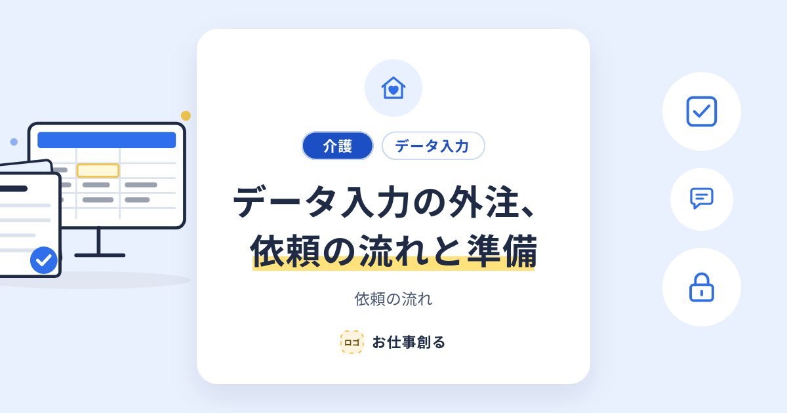
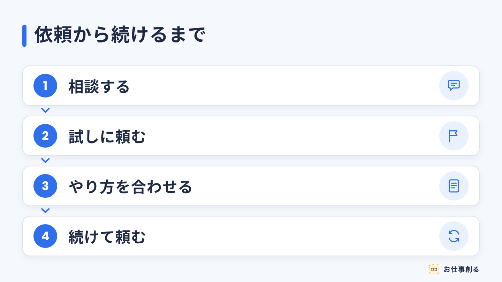

画像の指示書（かんたん版）
2026年10・11月の案件｜10月分は10月31日まで、11月分は11月30日までに提出
やる前に
- パソコンのブラウザで作業します（スマホではできません）。
- Canvaに無料登録して、ログインしておきます。
- 担当する案件は、職員さんが決めます。決まった案件のページだけ、上から順に進めます。
- やり方の動画：アプリの教材にある、各画像の「取組動画」と「テンプレートの使い方」を見ます。
- 分からない時は、そこで止めて、職員さんかぴくとに聞きます。
1枚ずつ、同じ4つ
- リンクを開く →「ファイル」→「コピーを作成」
- 表の文を入れる（「／」で Enter）
- 書き出す：左上の題名を、表の「画像の名前」に直す →「共有」→「ダウンロード」→ 種類は PNG →「ページを選択」で「このページ」→ ダウンロード（始まらない時は「こちらをクリック」）
- 提出する：アプリの「案件の成果物を提出」を開き、PNGを付ける →「届きました」と出たら完了
守ること 大きさ・色・文字の形を変えない／文を足さない／Canvaの素材・AIボタンを使わない
| 案件 | 記事 | 画像の数 | 目安 |
|---|
| 初級 B03 | 「文字起こし」ってどんな仕事？ | 2枚 | 25〜35分 |
| 中級 A01 | 介護のデータ入力、外注するなら | 4枚 | 60〜85分 |
| 上級 C01 | データ入力の外注、依頼の流れと準備 | 3枚 | 95〜125分 |
この先は、1枚ごとに1ページです。完成見本を見ながら作ります。
初級 B03｜I2（1200×630）「文字起こし」ってどんな仕事？｜OGP画像
1リンクを開いて、コピーを作る 型を開く（I2）「ファイル」→「コピーを作成」。新しいタブで開いた「…のコピー」で作業します。
2表の文を入れる そのまま入れます。「／」で Enter。| 場所（枠ID） | 入れる文 |
|---|
| T_TAG_1 | 入れない（文字と札を消す） |
| T_TAG_2 | 文字起こし |
| T_TITLE | 「文字起こし」って／どんな仕事？ |
| T_SUB | 文字起こしの仕事 |
| DECO_MARKER | 黄色の線を2行目の長さに合わせる |
| IC_INDUSTRY | 入れない（丸と絵を消す） |
・T_TAG_1 を消したら、T_TAG_2 の札（白い札と文字）を左へ61px動かして真ん中にそろえます。札と文字を1つずつ選び、Shift＋←を6回、←を1回押します。
・札がうまく選べない時は、ページの中の何もない所を押してから Tab キーを押すと、順番に選べます。
・文字が6字以上なら、白い札を文字に合わせて広げます。
3書き出す画像の名前：B-KYOTSU-MOJI-003-I2
左上の題名をこの名前に直す →「共有」→「ダウンロード」→ PNG →「このページ」
4提出するアプリの「案件の成果物を提出」にPNGを付けて出す。「届きました」で完了。
やり方の動画：I2の「取組動画」
完成見本（同じになれば合格です）
中級 A01｜I1（1200×675）介護のデータ入力、外注するなら｜アイキャッチ画像
1リンクを開いて、コピーを作る 型を開く（I1）「ファイル」→「コピーを作成」。新しいタブで開いた「…のコピー」で作業します。
2表の文を入れる そのまま入れます。「／」で Enter。| 場所（枠ID） | 入れる文 |
|---|
| T_TAG_1 | 介護 |
| T_TAG_2 | データ入力 |
| T_TITLE | 介護のデータ入力、／外注するなら |
| T_SUB | 頼む前に決めておくこと |
| DECO_MARKER | 黄色の線を2行目の長さに合わせる |
・T_TAG_2 が6字以上なら、白い札の右端を文字に合わせて広げます。
3書き出す画像の名前：A-KAIGO-DATA-001-I1
左上の題名をこの名前に直す →「共有」→「ダウンロード」→ PNG →「このページ」
4提出するアプリの「案件の成果物を提出」にPNGを付けて出す。「届きました」で完了。
やり方の動画：I1の「取組動画」
完成見本（同じになれば合格です）
中級 A01｜I2（1200×630）介護のデータ入力、外注するなら｜OGP画像
1リンクを開いて、コピーを作る 型を開く（I2）「ファイル」→「コピーを作成」。新しいタブで開いた「…のコピー」で作業します。
2表の文を入れる そのまま入れます。「／」で Enter。| 場所（枠ID） | 入れる文 |
|---|
| T_TAG_1 | 介護 |
| T_TAG_2 | データ入力 |
| T_TITLE | 介護のデータ入力、／外注するなら |
| T_SUB | 頼む前に決めておくこと |
| DECO_MARKER | 黄色の線を2行目の長さに合わせる |
・2つの札があるときは、2つの札をまとめて真ん中にそろえます。
・札がうまく選べない時は、ページの中の何もない所を押してから Tab キーを押すと、順番に選べます。
3書き出す画像の名前：A-KAIGO-DATA-001-I2
左上の題名をこの名前に直す →「共有」→「ダウンロード」→ PNG →「このページ」
4提出するアプリの「案件の成果物を提出」にPNGを付けて出す。「届きました」で完了。
やり方の動画：I2の「取組動画」
完成見本（同じになれば合格です）
上級 C01｜I2（1200×630）データ入力の外注、依頼の流れと準備｜OGP画像
1リンクを開いて、コピーを作る 型を開く（I2）「ファイル」→「コピーを作成」。新しいタブで開いた「…のコピー」で作業します。
2表の文を入れる そのまま入れます。「／」で Enter。| 場所（枠ID） | 入れる文 |
|---|
| T_TAG_1 | 介護 |
| T_TAG_2 | データ入力 |
| T_TITLE | データ入力の外注、／依頼の流れと準備 |
| T_SUB | 依頼の流れ |
| DECO_MARKER | 黄色の線を2行目の長さに合わせる |
・黄色い線が選べない時は、右の「レイヤー」で選び、「配置」で 幅430・X385 にします。
・2つの札があるときは、2つの札をまとめて真ん中にそろえます。
3書き出す画像の名前：C-KAIGO-DATA-001-I2
左上の題名をこの名前に直す →「共有」→「ダウンロード」→ PNG →「このページ」
4提出するアプリの「案件の成果物を提出」にPNGを付けて出す。「届きました」で完了。
やり方の動画：I2の「取組動画」
完成見本（同じになれば合格です）

上級 C01｜I3（1440×810）データ入力の外注、依頼の流れと準備｜流れの図（ページ2）
1リンクを開いて、コピーを作る 型を開く（I3）「ファイル」→「コピーを作成」。新しいタブで開いた「…のコピー」で作業します。
2表の文を入れる そのまま入れます。「／」で Enter。| 場所（枠ID） | 入れる文 |
|---|
| D_PATTERN | 2（書き出しもページ2） |
| D_TITLE | 依頼から続けるまで |
| D_BOX_1 | 相談する |
| D_BOX_2 | 試しに頼む |
| D_BOX_3 | やり方を合わせる |
| D_BOX_4 | 続けて頼む |
| D_ICON_1〜4 | 吹き出し・旗・書類・くり返し（テンプレの絵の位置を、この順に入れ替える） |
・アイコンが丸の後ろにかくれたら、レイヤーでアイコンを選んで「最前面へ」（Windows：Ctrl＋Alt＋］／Mac：⌘＋⌥＋］）。
3書き出す画像の名前：C-KAIGO-DATA-001-I3
左上の題名をこの名前に直す →「共有」→「ダウンロード」→ PNG →「このページ」
4提出するアプリの「案件の成果物を提出」にPNGを付けて出す。「届きました」で完了。
やり方の動画：I3の「取組動画」
完成見本（同じになれば合格です）
